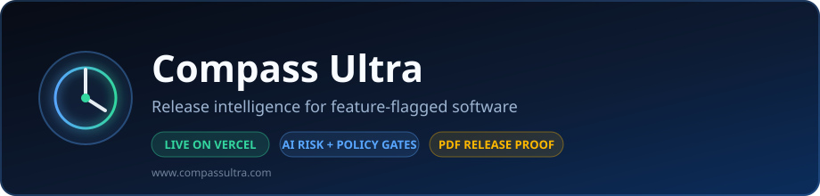
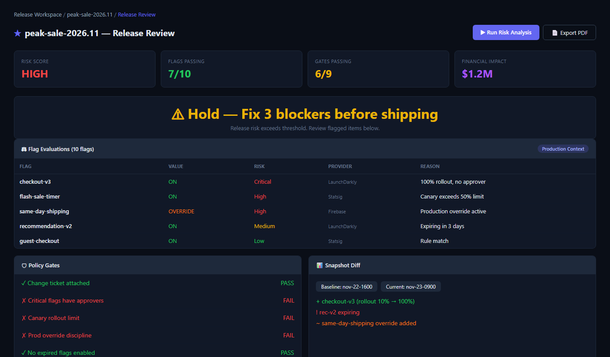
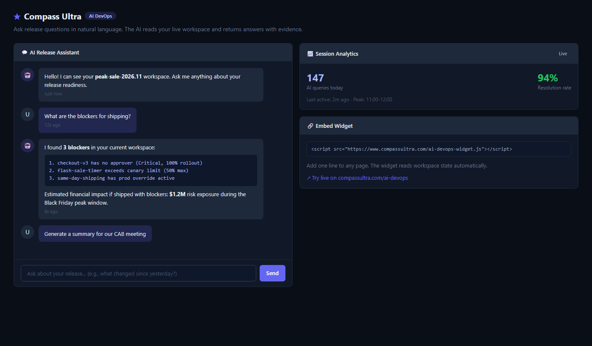
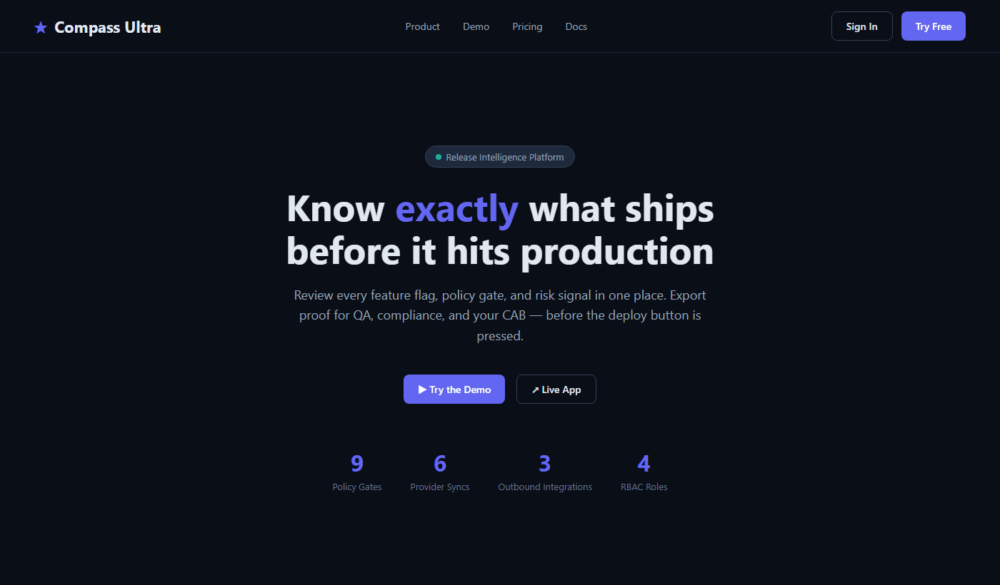

Policy gates
Nine automated checks for canary limits, dependencies, approvers, overrides, and change-ticket traceability.

Public showcase repo · production at compassultra.com
Compass Ultra is the release control room around feature flags — policy gates, AI risk analysis, snapshot diff, and PDF certificates before peak-traffic deploys.
Nine automated checks for canary limits, dependencies, approvers, overrides, and change-ticket traceability.
Live AI release review with financial impact estimates and a local fallback when the service is unavailable.
Snapshot diff, PDF readiness certificates, and GitHub / Jira / Slack payloads from one workspace.
Load flags → evaluate context → run gates → analyze risk → diff snapshots → export certificate → notify DevOps.
Peek at the workspace, demo flow, and AI analysis panel. Full interactive demo runs on the live site.


